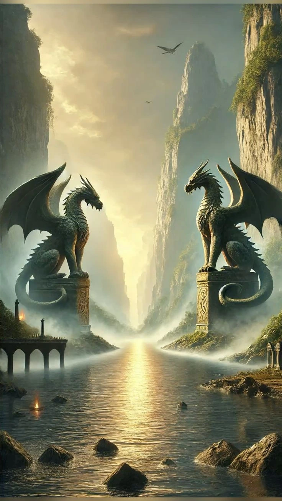

Welcome to DnD Toolbox!
A website to guide new and returning players back into the game.
How to Play
Dungeons and Dragons is an adventure RPG where players create characters to play through a story. The story is built by a Dungeon Master, who leads the flow of the game and enforces the game rules. The players can choose to do anything they want within the story; they are only limited by their dice rolls and the limits of the world the story takes place in. The player level up as they solve mysteries, fight monsters, and find treasures.
- Dice
- Character Sheet
- Imagination
What you'll need
Once you have the basic items listed above, you are ready to have fun and play!
If you cannot get dice, use ours below!
20 Sided Die
20